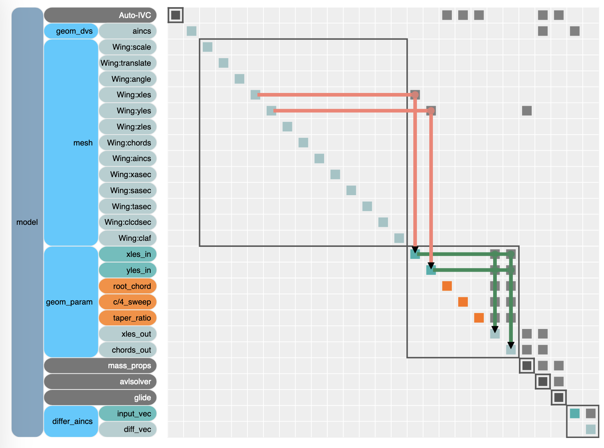
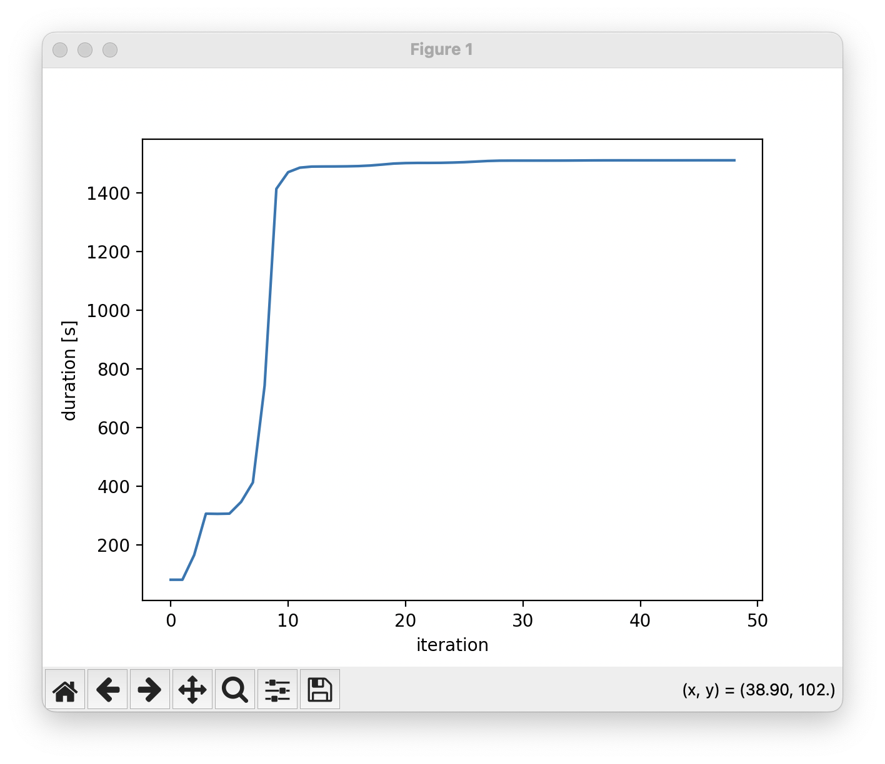
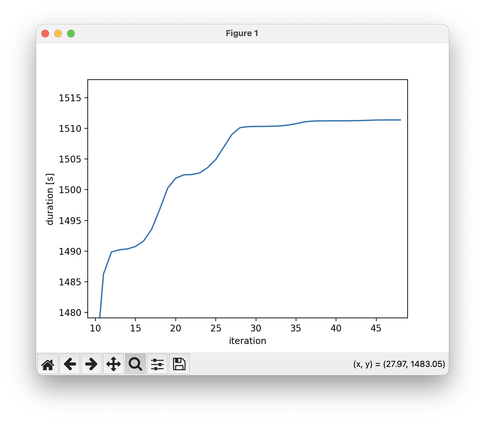
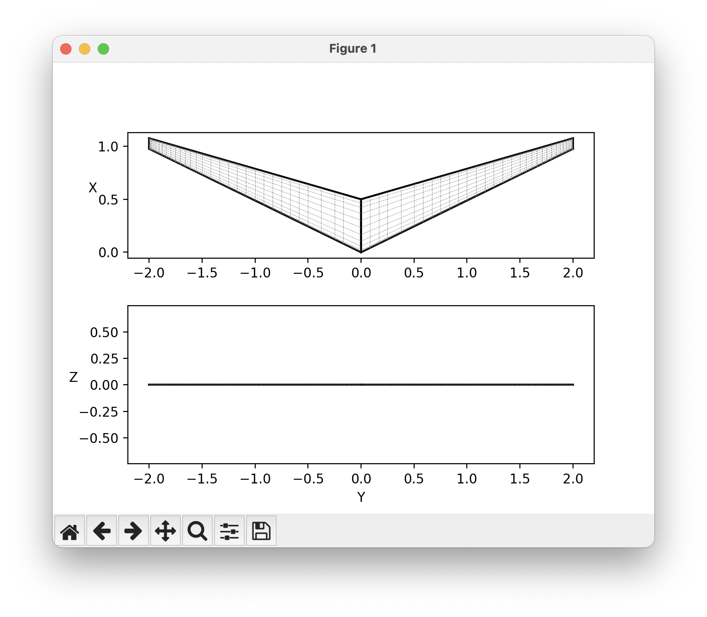
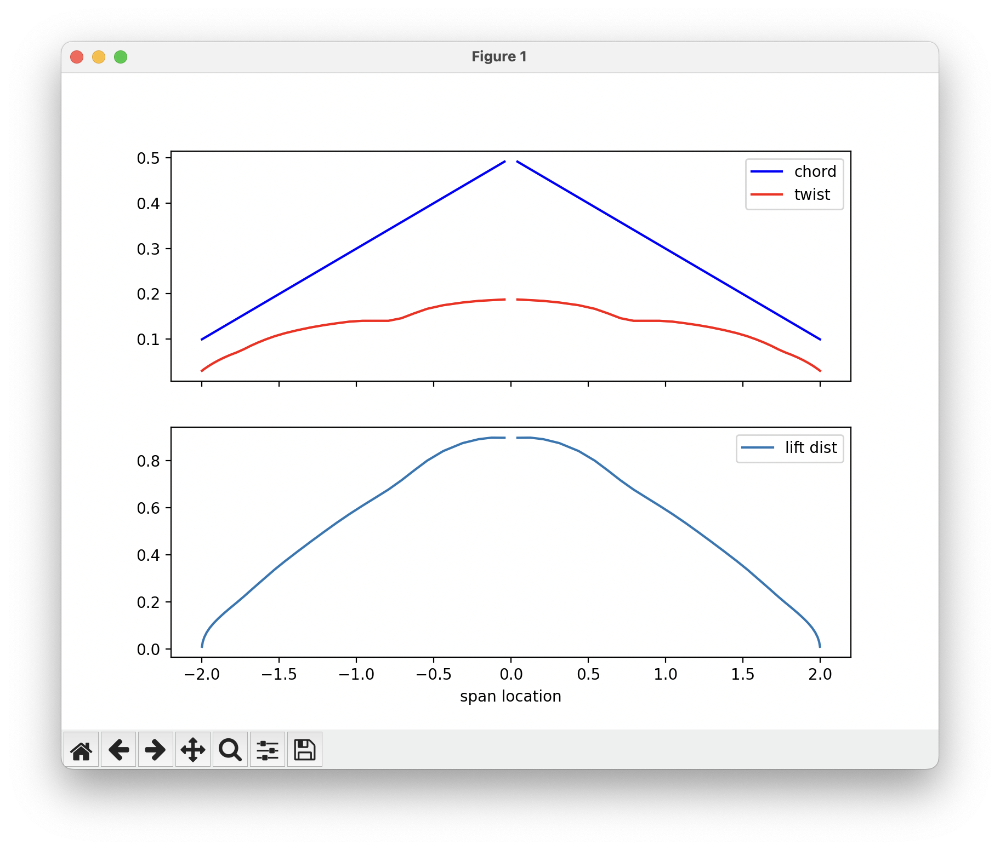

Planform optimization¶
This is a considerably more advanced tutorial that aims to represent a more realistic optimization problem. We are going to optimize the planform of a flying wing for maximum glide duration. In this example, we are going to walk through the planform optimization starting from a rectangular wing. We are going to modify the sweep of the wing with a custom parameterization that takes in the sweep design variable and sets the y coordinates of the leading edge accordingly. We add additional OpenMDAO components to add this additional functionality to our optimization. This is the power of OpenMDAO!
Custom parameterization¶
AVL defines the geometry at each section; however, wing planforms are generally defined with parameters that affect all sections such as sweep and taper ratio. To modify the geometry according to traditional planform variables we need to define a custom geometry component. The OpenMDAO Component below takes in the root chord, quarter chord sweep angle, and taper ratio and produces the sectional geometry needed by OptVL:
class GeometryParametrizationComp(om.ExplicitComponent):
def setup(self):
# Input variables
self.add_input("yles_in", shape_by_conn=True, desc="Baseline y leading edge coordinates")
self.add_input("root_chord", val=1.0, desc="Baseline y leading edge coordinates")
self.add_input("c/4_sweep", val=0.0, desc="shear Sweep")
self.add_input("taper_ratio", val=1.0, desc="taper ratio of the wing")
self.add_input("dihedral", val=0.0, desc="dihedral of wing")
# Output variables
self.add_output("xles_out", copy_shape="yles_in", desc="Transformed xyz leading edge coordinates")
self.add_output("zles_out", copy_shape="yles_in", desc="Transformed xyz leading edge coordinates")
self.add_output("chords_out", copy_shape="yles_in", desc="Transformed chord array")
# Finite difference partials
self.declare_partials("*", "*", method="cs")
def compute(self, inputs, outputs):
# Extracting input values
yles = inputs["yles_in"]
span = yles[-1]
relative_span = yles / span
chord_root = inputs["root_chord"]
tr = inputs["taper_ratio"]
chords = ((tr - 1) * relative_span + 1) * chord_root
zles = inputs["dihedral"] * relative_span
# do some math to figure out the quarter chord sweeep
outputs["xles_out"] = inputs["c/4_sweep"] * relative_span + (chord_root - chords) / 4
outputs["zles_out"] = zles
outputs["chords_out"] = chords
However, the component also needs the baseline section y coordinates. To supply this value we add a mesh component upstream of the geometry parameterization. If the parameterization did not rely on these baseline values this would not be necessary. The N2 diagram below shows how by placing a mesh component upstream of the geometry component, we can use the baseline values in our parameterization.

Mass properties¶
When modifying the planform, it is important to consider how the center of gravity and overall weight will be affected by the modification. To incorporate these effects into the model, a basic mass properties component recomputes these properties based on the planform. This component assumes that the aircraft is cut from a material of uniform density (such as foam) to make the calculation easier.
class MassProperties(om.ExplicitComponent):
# compute the new estimated center of gravity
# the weight of each section is proportional to the planform area
def initialize(self):
self.options.declare("density", types=float, default=1.0, desc="volume density of building material in kg/m**3")
def setup(self):
# input variables
self.add_input("xles", shape_by_conn=True, desc="Baseline x leading edge coordinates", units="m")
self.add_input("yles", shape_by_conn=True, desc="Baseline y leading edge coordinates", units="m")
self.add_input("chords", shape_by_conn=True, desc="chord distribution", units="m")
self.add_output("x_cg", desc="x postion of the CG in the same axis as the xles coordinate", units="m")
self.add_output("weight", desc="estimated weight of the airplane", units="N")
self.add_output("area", desc="planform area", units="m**2")
# Finite difference partials
self.declare_partials("*", "*", method="cs")
def compute(self, inputs, outputs):
xles = inputs["xles"]
yles = inputs["yles"]
chords = inputs["chords"]
density = self.options["density"]
g = 9.81 # acceleration due to gravity
k = 0.680883333333 # areea of a NACA 4 digit airfoil for unit chord divied by thickness from http://louisgagnon.com/scBlog/airfoilCenter.html
t = 0.12 # thicknes of airfoil
f = 0.4 # approximate centroid of an airfoil
# area is t*c = 0.680883333333*(0.12*c)*c
# we are going to find the mass, and center of mass for each of the wing sections
# we assume that the wing is of uniform density
x_cg = 0
mass = 0
xcg_numerator = 0
planform_area = 0
for idx in range(len(xles) - 1):
x1 = xles[idx]
y1 = yles[idx]
c1 = chords[idx]
x2 = xles[idx + 1]
y2 = yles[idx + 1]
c2 = chords[idx + 1]
dy = y2 - y1
planform_area += 0.5 * (c1 + c2) * dy # area of trapizoid
s = (c2 - c1) / dy # change in chord per span
mass += density * k * t * (s**2 * dy**3 / 3 + s * c1 * dy**2 + c1**2 * dy)
m = (x2 - x1) / dy # change in xles per span
A = m + f * s
B = x1 + f * c1
xcg_numerator += (
density
* t
* k
* (
A / 4 * s**2 * dy**4
+ 2 * A / 3 * s * c1 * dy**3
+ A / 2 * c1**2 * dy**2
+ B / 3 * s**2 * dy**3
+ 2 * B / 2 * s * c1 * dy**2
+ B * c1**2 * dy
)
)
x_cg = xcg_numerator / mass
if not self.under_approx:
print("Weight ", mass * g, "x_cg", x_cg)
outputs["weight"] = mass * g
outputs["x_cg"] = x_cg
outputs["area"] = planform_area
Custom Objective¶
Instead of minimizing drag like the prior optimization examples, here I use the outputs of OptVL to compute the glide duration. This is done with another OpenMDAO component that uses the mass properties and CL and CD of the candidate design. The glide duration is calculated assuming a steady glide from a fixed height (100 meters).
class GlidingFlight(om.ExplicitComponent):
def setup(self):
self.add_input("weight", desc="weight of the aircraft", units="N")
self.add_input("CL", desc="lift coefficent of the aicraft")
self.add_input("CD", desc="drag coefficent")
self.add_input("Sref", desc="planform area", units="m**2")
self.add_input("height", val=100, desc="height of the glider from the ground", units="m")
self.add_input("density_air", val=1.225, desc="density of air you are gliding in", units="kg/m**3")
self.add_output("glide_angle", desc="the glide angle of the descent")
self.add_output("duration", desc="the glide angle of the descent", units="s")
self.declare_partials("*", "*", method="cs")
def compute(self, inputs, outputs):
cl = inputs["CL"]
cd = inputs["CD"]
rho = inputs["density_air"]
weight = inputs["weight"]
Sref = inputs["Sref"]
# determine the glide angle from the lift to drag
theta = np.arctan(cd / cl)
# based on the weight deterimne the rate of descent such that lift = cos(theta)*weight - sind(theta)*cd
a = rho / 2 * Sref
coef = cl * np.cos(theta) + cd * np.sin(theta)
v_mag = np.sqrt((weight / (a * coef)))
v_descent = v_mag * np.sin(theta)
# the duration is the height divied by the descent velocity
duration = inputs["height"] / v_descent
outputs["glide_angle"] = theta * 180 / np.pi
outputs["duration"] = duration
if not self.under_approx:
print("L/D", cl / cd, "glide_angle", np.rad2deg(theta), "duration", duration)
Example Script¶
Combining all these components into the OpenMDAO model we get the following script.
"""A openmdao based optimization for an aicraft using optvl"""
# the x-start and x-end comments are for integration with the documentation
# they are not necessary for normal scripts
import openmdao.api as om
from optvl import OVLGroup, Differencer, OVLMeshReader
import numpy as np
# geom-start
class GeometryParametrizationComp(om.ExplicitComponent):
def setup(self):
# Input variables
self.add_input("yles_in", shape_by_conn=True, desc="Baseline y leading edge coordinates")
self.add_input("root_chord", val=1.0, desc="Baseline y leading edge coordinates")
self.add_input("c/4_sweep", val=0.0, desc="shear Sweep")
self.add_input("taper_ratio", val=1.0, desc="taper ratio of the wing")
self.add_input("dihedral", val=0.0, desc="dihedral of wing")
# Output variables
self.add_output("xles_out", copy_shape="yles_in", desc="Transformed xyz leading edge coordinates")
self.add_output("zles_out", copy_shape="yles_in", desc="Transformed xyz leading edge coordinates")
self.add_output("chords_out", copy_shape="yles_in", desc="Transformed chord array")
# Finite difference partials
self.declare_partials("*", "*", method="cs")
def compute(self, inputs, outputs):
# Extracting input values
yles = inputs["yles_in"]
span = yles[-1]
relative_span = yles / span
chord_root = inputs["root_chord"]
tr = inputs["taper_ratio"]
chords = ((tr - 1) * relative_span + 1) * chord_root
zles = inputs["dihedral"] * relative_span
# do some math to figure out the quarter chord sweeep
outputs["xles_out"] = inputs["c/4_sweep"] * relative_span + (chord_root - chords) / 4
outputs["zles_out"] = zles
outputs["chords_out"] = chords
# geom-end
# mass-start
class MassProperties(om.ExplicitComponent):
# compute the new estimated center of gravity
# the weight of each section is proportional to the planform area
def initialize(self):
self.options.declare("density", types=float, default=1.0, desc="volume density of building material in kg/m**3")
def setup(self):
# input variables
self.add_input("xles", shape_by_conn=True, desc="Baseline x leading edge coordinates", units="m")
self.add_input("yles", shape_by_conn=True, desc="Baseline y leading edge coordinates", units="m")
self.add_input("chords", shape_by_conn=True, desc="chord distribution", units="m")
self.add_output("x_cg", desc="x postion of the CG in the same axis as the xles coordinate", units="m")
self.add_output("weight", desc="estimated weight of the airplane", units="N")
self.add_output("area", desc="planform area", units="m**2")
# Finite difference partials
self.declare_partials("*", "*", method="cs")
def compute(self, inputs, outputs):
xles = inputs["xles"]
yles = inputs["yles"]
chords = inputs["chords"]
density = self.options["density"]
g = 9.81 # acceleration due to gravity
k = 0.680883333333 # areea of a NACA 4 digit airfoil for unit chord divied by thickness from http://louisgagnon.com/scBlog/airfoilCenter.html
t = 0.12 # thicknes of airfoil
f = 0.4 # approximate centroid of an airfoil
# area is t*c = 0.680883333333*(0.12*c)*c
# we are going to find the mass, and center of mass for each of the wing sections
# we assume that the wing is of uniform density
x_cg = 0
mass = 0
xcg_numerator = 0
planform_area = 0
for idx in range(len(xles) - 1):
x1 = xles[idx]
y1 = yles[idx]
c1 = chords[idx]
x2 = xles[idx + 1]
y2 = yles[idx + 1]
c2 = chords[idx + 1]
dy = y2 - y1
planform_area += 0.5 * (c1 + c2) * dy # area of trapizoid
s = (c2 - c1) / dy # change in chord per span
mass += density * k * t * (s**2 * dy**3 / 3 + s * c1 * dy**2 + c1**2 * dy)
m = (x2 - x1) / dy # change in xles per span
A = m + f * s
B = x1 + f * c1
xcg_numerator += (
density
* t
* k
* (
A / 4 * s**2 * dy**4
+ 2 * A / 3 * s * c1 * dy**3
+ A / 2 * c1**2 * dy**2
+ B / 3 * s**2 * dy**3
+ 2 * B / 2 * s * c1 * dy**2
+ B * c1**2 * dy
)
)
x_cg = xcg_numerator / mass
if not self.under_approx:
print("Weight ", mass * g, "x_cg", x_cg)
outputs["weight"] = mass * g
outputs["x_cg"] = x_cg
outputs["area"] = planform_area
# mass-end
# glide-start
class GlidingFlight(om.ExplicitComponent):
def setup(self):
self.add_input("weight", desc="weight of the aircraft", units="N")
self.add_input("CL", desc="lift coefficent of the aicraft")
self.add_input("CD", desc="drag coefficent")
self.add_input("Sref", desc="planform area", units="m**2")
self.add_input("height", val=100, desc="height of the glider from the ground", units="m")
self.add_input("density_air", val=1.225, desc="density of air you are gliding in", units="kg/m**3")
self.add_output("glide_angle", desc="the glide angle of the descent")
self.add_output("duration", desc="the glide angle of the descent", units="s")
self.declare_partials("*", "*", method="cs")
def compute(self, inputs, outputs):
cl = inputs["CL"]
cd = inputs["CD"]
rho = inputs["density_air"]
weight = inputs["weight"]
Sref = inputs["Sref"]
# determine the glide angle from the lift to drag
theta = np.arctan(cd / cl)
# based on the weight deterimne the rate of descent such that lift = cos(theta)*weight - sind(theta)*cd
a = rho / 2 * Sref
coef = cl * np.cos(theta) + cd * np.sin(theta)
v_mag = np.sqrt((weight / (a * coef)))
v_descent = v_mag * np.sin(theta)
# the duration is the height divied by the descent velocity
duration = inputs["height"] / v_descent
outputs["glide_angle"] = theta * 180 / np.pi
outputs["duration"] = duration
if not self.under_approx:
print("L/D", cl / cd, "glide_angle", np.rad2deg(theta), "duration", duration)
# glide-end
model = om.Group()
geom_dvs = model.add_subsystem("geom_dvs", om.IndepVarComp())
geom_dvs.add_output("aincs", shape_by_conn=True)
model.connect("geom_dvs.aincs", "ovlsolver.Wing:aincs")
model.add_subsystem("mesh", OVLMeshReader(geom_file="../geom_files/rectangle.avl"))
model.add_subsystem("geom_param", GeometryParametrizationComp())
model.connect("mesh.Wing:yles", ["geom_param.yles_in"])
# assuming we made everything out of pink insulation foam (20.8 kg/m**3)
# https://dcpd6wotaa0mb.cloudfront.net/mdms/dms/EIS/10015703/10015703-FOAMULAR-SI-and-I-P-Units-for-Selected-Properties-Tech.-Bulletin.pdf
model.add_subsystem("mass_props", MassProperties(density=20.8))
model.connect("geom_param.xles_out", ["mass_props.xles"])
model.connect("mesh.Wing:yles", ["mass_props.yles"])
model.connect("geom_param.chords_out", ["mass_props.chords"])
model.add_subsystem(
"ovlsolver",
OVLGroup(
geom_file="../geom_files/rectangle.avl",
output_stability_derivs=True,
write_grid=True,
input_param_vals=True,
input_ref_vals=True,
output_dir="opt_output_sweep",
),
)
model.connect("geom_param.xles_out", ["ovlsolver.Wing:xles"])
model.connect("geom_param.zles_out", ["ovlsolver.Wing:zles"])
model.connect("geom_param.chords_out", ["ovlsolver.Wing:chords"])
model.connect("mass_props.x_cg", ["ovlsolver.X cg"])
model.connect("mass_props.area", ["ovlsolver.Sref"])
model.add_subsystem("glide", GlidingFlight())
model.connect("mass_props.weight", ["glide.weight"])
model.connect("mass_props.area", ["glide.Sref"])
model.connect("ovlsolver.CL", ["glide.CL"])
model.connect("ovlsolver.CD", ["glide.CD"])
model.add_subsystem("differ_aincs", Differencer())
model.connect("geom_dvs.aincs", "differ_aincs.input_vec")
# design variables modify the planform and twist distribution
model.add_design_var("geom_param.c/4_sweep", lower=0.0, upper=3.0)
model.add_design_var("geom_param.taper_ratio", lower=0.1, upper=1.0)
model.add_design_var("geom_param.root_chord", lower=0.5, upper=4.0)
model.add_design_var("ovlsolver.Wing:aincs", lower=-15, upper=15)
model.add_constraint("ovlsolver.Cm", equals=0.0, scaler=1e2)
model.add_constraint("ovlsolver.static margin", upper=0.3, lower=0.1, scaler=1e1)
# this spiral parameter makes the problem harder to solve but more realistic
# model.add_constraint("ovlsolver.spiral parameter", lower=1.0, scaler=1e0)
# you can optionally add dihedral as a design variable too
# model.add_design_var("geom_param.dihedral", lower=0.0, upper=0.5)
# make sure CL stays slightly positive to avoid
model.add_constraint("ovlsolver.CL", lower=0.1, scaler=1)
# Some variables (like chord, dihedral, x and z leading edge position) can lead to local minimum.
# To help fix this add a contraint that keeps the variable monotonic
model.add_constraint("differ_aincs.diff_vec", upper=0.0, linear=True) # twist can only decrease
# scale down the duration to be about order 1
# negative scaler because the optimizer only minimizes
model.add_objective("glide.duration", scaler=-1e-3)
prob = om.Problem(model)
prob.driver = om.ScipyOptimizeDriver()
prob.driver.options["optimizer"] = "SLSQP"
prob.driver.options["debug_print"] = ["desvars", "ln_cons", "nl_cons", "objs"]
prob.driver.options["tol"] = 1e-6
prob.driver.options["disp"] = True
prob.driver.add_recorder(om.SqliteRecorder("opt_history.sql"))
prob.driver.recording_options["includes"] = ["*"]
prob.driver.recording_options["record_objectives"] = True
prob.driver.recording_options["record_constraints"] = True
prob.driver.recording_options["record_desvars"] = True
prob.setup(mode="rev")
prob.run_driver()
om.n2(prob, show_browser=False, outfile="vlm_opt.html")
# prob.run_model()
# prob.check_totals()
Results¶
The optimized design has a glide duration of over 1400 seconds.
We can plot the objective function over the iterations using OpenMDAO's CaseReader class, using the recorder we made.
Additionally, we can load in the last .avl file written during the optimization to view the geometry of the optimized design.
import openmdao.api as om
import numpy as np
import matplotlib.pyplot as plt
from optvl import OVLSolver
import glob
import os
cr = om.CaseReader("./run_opt_om_planform_out/opt_history.sql")
driver_cases = cr.list_cases("driver", out_stream=None)
obj_arr = np.zeros(len(driver_cases))
for idx_case in range(len(driver_cases)):
obj_arr[idx_case] = cr.get_case(driver_cases[idx_case])["glide.duration"]
plt.plot(obj_arr)
plt.xlabel("iteration")
plt.ylabel("duration [s]")
plt.show()
# search the output directory for the latest file with a .dat extension
# Use glob to find all .dat files in the given directory
output_dir = "opt_output_sweep"
files = glob.glob(os.path.join(output_dir, "*.avl"))
# Find the .dat file with the latest modification time
latest_file = max(files, key=os.path.getmtime)
ovl = OVLSolver(geo_file=latest_file)
ovl.plot_geom()
ovl.execute_run()
strip_data = ovl.get_strip_forces()
# Create a figure and two subplots that share the x-axis
fig, (ax1, ax2) = plt.subplots(2, 1, sharex=True, figsize=(8, 6))
for surf_key in strip_data:
span_distance = strip_data[surf_key]["Y LE"]
ax1.plot(span_distance, strip_data[surf_key]["chord"], color="blue", label="chord")
ax1.plot(span_distance, strip_data[surf_key]["twist"], color="red", label="twist")
ax2.plot(span_distance, strip_data[surf_key]["lift dist"], color="C0", label="list dist")
ax1.legend(["chord", "twist"])
ax2.legend(["lift dist"])
ax2.set_xlabel("span location")
plt.show()
The objective function quickly rises to about 1400 seconds and then levels off.

However, if we zoom in we can see that some slight improvements are still being made to the design over the final iterations

From the geometry we can see that the aspect ratio of the wing has increased dramatically and now has a sweep.

Looking at the twist and chord distribution, we can see a linear chord distribution because of the taper ratio and the wash-out in the sweep. The lift distribution does not look elliptical, which makes sense, as maximizing glide duration is not equivalent to minimizing drag.
